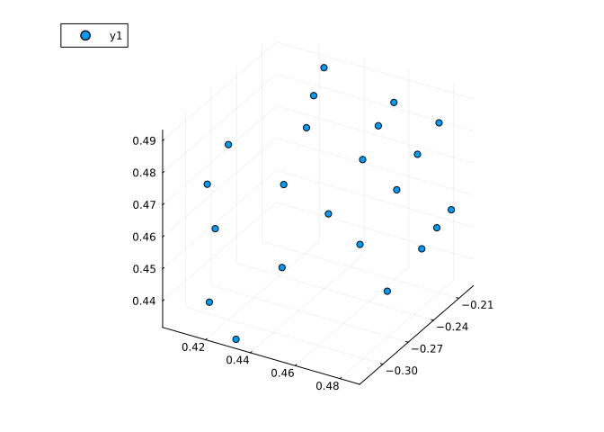
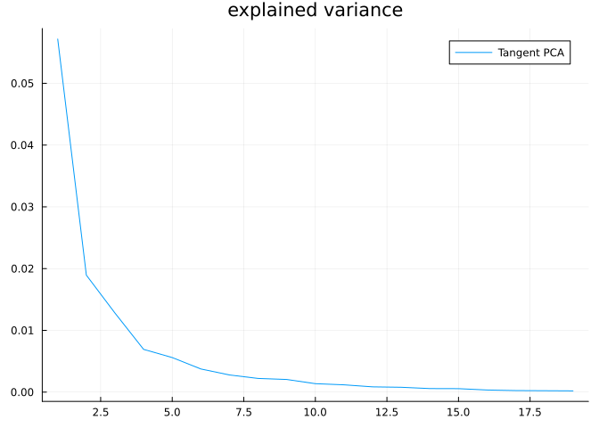
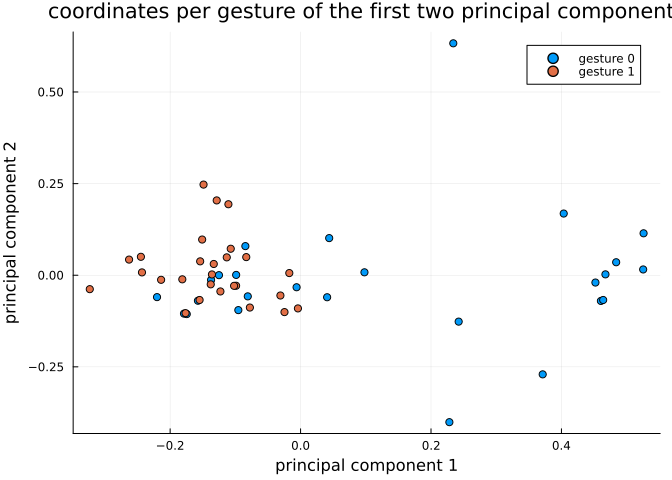
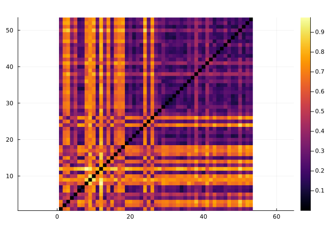

Hand gesture analysis
In this tutorial we will learn how to use Kendall’s shape space to analyze hand gesture data.
Let’s start by loading libraries required for our work.
using Manifolds, CSV, DataFrames, Plots, MultivariateStatsPrecompiling packages...
1966.0 ms ✓ QuartoNotebookWorkerTablesExt (serial)
1 dependency successfully precompiled in 2 seconds
Precompiling packages...
883.9 ms ✓ QuartoNotebookWorkerLaTeXStringsExt (serial)
1 dependency successfully precompiled in 1 seconds
Precompiling packages...
1103.6 ms ✓ QuartoNotebookWorkerJSONExt (serial)
1 dependency successfully precompiled in 1 seconds
Precompiling packages...
2387.9 ms ✓ QuartoNotebookWorkerPlotsExt (serial)
1 dependency successfully precompiled in 2 secondsOur first function loads dataset of hand gestures, described here.
function load_hands()
hands_url = "https://raw.githubusercontent.com/geomstats/geomstats/master/geomstats/datasets/data/hands/hands.txt"
hand_labels_url = "https://raw.githubusercontent.com/geomstats/geomstats/master/geomstats/datasets/data/hands/labels.txt"
hands = Matrix(CSV.read(download(hands_url), DataFrame, header=false))
hands = reshape(hands, size(hands, 1), 3, 22)
hand_labels = CSV.read(download(hand_labels_url), DataFrame, header=false).Column1
return hands, hand_labels
endload_hands (generic function with 1 method)The following code plots a sample gesture as a 3D scatter plot of points.
hands, hand_labels = load_hands()
scatter3d(hands[1, 1, :], hands[1, 2, :], hands[1, 3, :])
Each gesture is represented by 22 landmarks in $ℝ³$, so we use the appropriate Kendall’s shape space
Mshape = KendallsShapeSpace(3, 22)KendallsShapeSpace(3, 22)Hands read from the dataset are projected to the shape space to remove translation and scaling variability. Rotational variability is then handled using the quotient structure of KendallsShapeSpace
hands_projected = [project(Mshape, hands[i, :, :]) for i in axes(hands, 1)]In the next part let’s do tangent space PCA. This starts with computing a mean point and computing logithmic maps at mean to each point in the dataset.
mean_hand = mean(Mshape, hands_projected)
hand_logs = [log(Mshape, mean_hand, p) for p in hands_projected]For a tangent PCA, we need coordinates in a basis. Some libraries skip this step because the representation of tangent vectors forms a linear subspace of an Euclidean space so PCA automatically detects which directions have no variance but this is a more generic way to solve this issue.
B = get_basis(Mshape, mean_hand, ProjectedOrthonormalBasis(:svd))
hand_log_coordinates = [get_coordinates(Mshape, mean_hand, X, B) for X in hand_logs]This code prepares data for MultivariateStats – mean=0 is set because we’ve centered the data geometrically to mean_hand in the code above.
red_coords = reduce(hcat, hand_log_coordinates)
fp = fit(PCA, red_coords; mean=0)PCA(indim = 59, outdim = 19, principalratio = 0.9913454778626318)
Pattern matrix (unstandardized loadings):
StatsBase.CoefTable(Any[[0.02257246004537248, -0.02980182557225264, -0.004964324459624134, 0.005633496043805807, -0.011383768897940887, -0.034585865058445485, -0.03743422187671466, 0.024960049359907623, 0.029600323814830486, 0.018755356417931315 … -0.0023357801611186674, -0.015355855943893553, 0.026322419523292357, 0.034036516282651995, -0.011779771824801007, 0.04096101788108656, 0.010292490974484205, 0.04774073460871383, 0.03999726543039054, -0.0033072379731629875], [-0.025823039173795873, 0.012854977338756245, -0.014972322916345402, -0.012939536421699371, 0.02322977602407987, -0.023347712562369026, -0.020996339497569856, 0.00943875795760458, 0.04721314342811319, 0.003370614245069821 … -0.020275611219519235, -0.010008175334298305, -0.017408030053972148, 0.0249426439581602, 0.009035293858153425, -0.0047417990293722396, 0.013983958565692574, 1.1467797970996027e-5, -0.018974112321107878, 0.000903052538887596], [0.0024711872495932906, -0.025378773934064798, -0.0037720352374313554, 0.007524659785900222, -0.005471260349520969, 0.029654562445158714, 0.0023565292056443336, 0.01166799220849088, 0.0021021261726955065, 0.025424688626918882 … 0.02656156454570421, 0.013963169827554179, -0.022918124878462207, -0.0005284110995893443, 0.038770147293103956, -0.004676525569188525, 0.0008126393948786793, -0.00662023880218093, -0.024789608372174123, 0.008096134187283223], [-0.00194504443405001, -0.01075256194677591, 0.01602044014257528, 0.005558467442107272, -0.017907407457375027, 0.006898356649655013, 0.000683236735453054, -0.00772332833485149, -0.003935446920210037, 0.0018271561544017036 … 0.012729295358004709, 0.004931218519611811, -0.0028149811489063667, 0.009758029075481848, 0.004547267702414399, 0.029957301044316296, -0.0037370575059621166, 0.0021972914972593575, 0.029737627388694954, -0.004969358556730513], [0.011186950153225815, -0.0006423011735476848, -0.0052388029436356036, -0.0028032214185194785, -0.0022518313252464783, 0.0033259951665938156, 0.007585011202186921, 0.009605979388644542, -0.0014263591911156416, -0.007260247433291923 … -0.011826646532313075, -0.022262645439337172, 0.008668015330470692, 0.013784389390255091, -0.009076967162290674, -0.010076045438434282, -0.0034958383819728763, 0.004309516014510604, -0.013145004173860695, 0.006297121804788555], [0.008651223799808698, 0.002433434141225892, 0.0021293396266027203, 0.007821944224437731, -0.012300102093615138, -0.001358829430956339, -0.009993981204082689, -0.0014207392203738599, -0.0023619196392425036, 0.0034535897012207876 … 0.008936017868436227, 0.0004935963305451497, -0.001912796983456987, 0.01295507761898293, -0.004886340762516196, -0.005326614669349789, 0.012450411025662031, -0.004493880710828525, -0.0053732244774150235, -0.00809498427742216], [-0.004319998075909902, -0.012918596461196795, -0.005687030378319555, 0.0011185824495777224, -0.0037906877229895095, -0.01196143875790309, 0.0065712067909271385, 0.002119641383089137, -0.00533011077364397, 0.01187528515202468 … 0.0019797465139860955, 0.008330219389286594, 0.001954272636330453, 0.004202570562530439, -0.0077338399323668506, -0.008715291456581724, -0.004418569175313813, 0.0011909250716818445, 0.000798352492266042, 0.0039606755851358776], [0.0023269720883287103, 0.011772850770134138, -0.00338035981645682, 0.00850539850572309, 0.0037555251259071944, 0.0032953523828587795, 0.007828931546620607, -0.000840499088747065, -0.003453827415129312, 0.003926143719602887 … 0.007959071832154564, -0.003870896302492906, 0.004397435054965925, -0.007002059588482043, -6.196437804097202e-6, 0.00405129807313315, -0.004471597124066054, 0.000191644269263661, -0.0037662378193183076, 0.0024340975104184515], [-0.0013311265947827397, 0.015972316231868976, 0.0008897781321431301, -0.002733340643314059, -0.011029238218502484, -0.006986487269377631, -0.004069026343207816, -0.00023475386877886404, -0.0043934082313762035, -0.007373720989854001 … 0.00501867073470897, 0.007438231848929491, -0.005840109672260231, -0.0017758102255207742, 0.0089246987513809, -0.0035845492068196103, 0.0014051116421369173, 0.0032537345196639836, -0.0004894200306934497, 0.002668987443309473], [-0.006037426707429303, 0.0010776273323101463, -0.002145461009095622, -0.005816090523971889, 0.0030472196837556466, -0.004938140011027396, -0.005816265668593103, -0.0007496566624468053, -0.008529476455382152, -0.00026128276727846857 … 0.002224613662877676, -0.006995985567868494, 0.008198446992068696, 0.005893813743341026, 0.006187827191903613, -0.004629933583542503, 0.0032849536938801376, 0.0037937891028696643, 0.0013668973567463512, -0.0018228767896920196], [0.0027917258749112018, -0.0013155471408871095, -0.0008962251233789058, 0.004501210278470023, -0.004592280785455627, 0.0037663627515360527, -0.0007972200325925765, 0.0003079859617821317, -0.0003969244765756917, -0.004459096436834762 … 0.002229647446721546, -0.0016894994732513042, 0.0002795618770947551, 0.00212311373963348, -0.0034753499532846066, 0.0025015581073940733, 0.006842821617011247, -0.0004640579846813049, -0.0026148912615683757, -0.0035743344558873324], [0.004596065514356212, 0.0028502583445872065, -0.0013790687552542589, -0.0003866301608101194, -0.004777023387519968, 0.0006134320551211206, 0.004120202121346409, 0.006685697380611342, -0.00015067781814311935, 0.0006237617431250932 … -0.0019320906941175358, 0.0012774247519003535, 0.00042936508389407985, 0.0031713676002675093, -0.004950080880306881, 0.0022383516043710666, -0.008846181174833037, -0.0039062234433676784, 0.006220291842687402, 0.0013847318533676187], [0.002610398967807105, 0.0046398901625062635, -0.0024717929643720557, 0.0016724152694990626, -0.0004421128056946727, -0.0014923438744324255, 0.003198991797676305, -0.00013338394499793163, 0.003303856900362235, -0.001231767752517344 … 0.006712786930833112, 0.004309744050174674, -0.00017454931758110592, -0.0018641470290198358, -0.000644665150497701, 0.0054579006534549645, 0.00422919891033264, 0.00283012096518913, -0.0018630815616692915, 0.001433614666804966], [-0.0019434568637891668, -0.0021612473585633767, 0.002391525964781912, 0.002315271942555735, 0.0016629478572154687, -0.00025012683738038843, 0.005857829160515179, 0.0030088704204796796, 0.0008996697030091297, -0.0018743383703328708 … 0.0005128063007909225, -0.008362890148809289, 0.002404617778016228, 0.0023634933454354345, 0.004981224346151854, 0.005198866627535518, 0.005772887422070212, 0.003614469563820361, -0.002278173525543706, -0.001716816355800369], [-0.0010808963017124656, 0.001619560415327075, -0.0003771075510434521, 0.0003079656595221933, 0.0023850661596995074, 0.006233611842355459, -0.001675807136235283, 0.002270395259068624, 0.003887208561504743, 0.0034722072938073033 … -0.00012358865983021417, 0.0071468130329765895, 0.0035859562447326907, 0.002717341837382107, 0.0015870778220025844, -0.0003058734421021096, -0.0020072821407395585, -0.00032109212000801094, -0.0032971644780231102, -0.00717316986025233], [0.003712789058664769, 0.001050938263399522, -0.0021510543253574657, -0.0013118087548424215, 0.004897844213625642, 0.002543639117580356, 0.003024896649794406, 0.0012030067705634526, -0.0019924326803289864, 0.0012241411140404665 … 0.0012737753950208823, 0.003566982145969662, 0.0008381300886717922, -0.0001993314473492679, -0.0002999862733356499, 0.0004486108397333278, 0.0024822429892029985, 0.0003982208416683389, 6.7250477905529625e-6, -0.004232293343568892], [-0.0026940953523536433, 0.0002993496910673412, 0.0027909026087686224, 0.0007207436837298813, -0.0026175599830039788, -0.0009999172325993878, 0.003224725180877633, 0.0020384107172071093, -0.0016154369021440208, 0.001626471020584899 … -0.0013944261619832522, -0.0007442859380612342, -0.0011068792242915444, 0.00022567123281259837, 0.0013740102762274833, -0.002114227461236833, 0.003545515493396136, -0.001809630183996304, 0.00269157454932317, -0.0025216232021573978], [-0.0033671614594201447, -0.0008188631538515978, 0.00011775052466237845, 0.0011111358080330637, 0.001010934915439559, 9.66510507050631e-6, -0.0010831398167253144, 0.0009664722761350665, 0.0032997209919371144, 0.00017909349683256076 … 0.001996995598138442, 0.0008252778217482708, -0.0004861636855559984, 0.002806939757671204, -0.004156845540350047, 0.001255169930115638, 0.002611867568253287, -0.003222213831438384, -0.0013331674368972236, 0.00019209037737094248], [-4.781154610679589e-6, 0.00022684742365573305, -0.0012721293144724317, 0.003619348431617188, -0.0017845710025000522, -0.00022561329409283252, -0.001160416291997455, 0.00120560772963885, -0.0016086677433841054, -0.0006395193787872067 … -0.0018315959323529753, 0.0026903948118464503, 0.0015561843645204557, 0.004167413290689644, 0.0015169202454330128, -0.0024752727920495147, 0.0014723783499706476, 0.0033946320771243944, 0.0003729212637661082, 0.0006172652760284017]], ["PC1", "PC2", "PC3", "PC4", "PC5", "PC6", "PC7", "PC8", "PC9", "PC10", "PC11", "PC12", "PC13", "PC14", "PC15", "PC16", "PC17", "PC18", "PC19"], ["1", "2", "3", "4", "5", "6", "7", "8", "9", "10" … "50", "51", "52", "53", "54", "55", "56", "57", "58", "59"], 0, 0)
Importance of components:
StatsBase.CoefTable(Any[[0.057166540004945914, 0.47794493822775136, 0.47794493822775136, 0.4821174342351506, 0.4821174342351506], [0.018941331888514434, 0.15836035727584932, 0.6363052955036007, 0.15974285535379515, 0.6418602895889457], [0.012798484512729339, 0.10700264331750758, 0.7433079388211083, 0.10793678460934551, 0.7497970741982912], [0.006923427755133032, 0.05788381193728128, 0.8011917507583896, 0.058389142059819925, 0.8081862162581112], [0.00559568698335672, 0.04678314044143435, 0.8479748911998239, 0.04719156084950333, 0.8553777771076145], [0.0037497528458254065, 0.03135007632283332, 0.8793249675226572, 0.03162376489619436, 0.8870015420038089], [0.0027778916157896183, 0.023224761138195348, 0.9025497286608526, 0.023427515086131803, 0.9104290570899406], [0.0022167490664944224, 0.01853328880076419, 0.9210830174616167, 0.018695085834983048, 0.9291241429249236], [0.002047826920392751, 0.017121003140710644, 0.9382040206023274, 0.01727047081268177, 0.9463946137376054], [0.0013686271209177399, 0.011442504736289107, 0.9496465253386165, 0.01154239868119383, 0.9579370124187992], [0.0011819730590867266, 0.009881970129085938, 0.9595284954677024, 0.009968240487051737, 0.9679052529058509], [0.0008538691922713968, 0.007138834330701571, 0.966667329798404, 0.007201156902529171, 0.9751064098083801], [0.000786129032438219, 0.006572487889160679, 0.9732398176875647, 0.006629866213069479, 0.9817362760214496], [0.0005753575329391353, 0.00481031772284408, 0.9780501354104087, 0.004852312165901294, 0.9865885881873508], [0.0005615618059642264, 0.0046949775627388975, 0.9827451129731477, 0.004735965077342561, 0.9913245532646935], [0.0003427255959320607, 0.0028653818083558334, 0.9856104947815034, 0.0028903968115471467, 0.9942149500762405], [0.0002531637839332066, 0.0021165938862661923, 0.9877270886677696, 0.0021350719134056342, 0.9963500219896462], [0.0002292520086932976, 0.001916677782563477, 0.989643766450333, 0.0019334105267680114, 0.9982834325164143], [0.00020354008536792838, 0.0017017114122986846, 0.9913454778626318, 0.001716567483585663, 0.9999999999999998]], ["PC1", "PC2", "PC3", "PC4", "PC5", "PC6", "PC7", "PC8", "PC9", "PC10", "PC11", "PC12", "PC13", "PC14", "PC15", "PC16", "PC17", "PC18", "PC19"], ["SS Loadings (Eigenvalues)", "Variance explained", "Cumulative variance", "Proportion explained", "Cumulative proportion"], 0, 0)Now let’s show explained variance of each principal component.
plot(principalvars(fp), title="explained variance", label="Tangent PCA")
The next plot shows how projections on the first two principal components look like.
fig = plot(; title="coordinates per gesture of the first two principal components")
for label_num in [0, 1]
mask = hand_labels .== label_num
cur_hand_logs = red_coords[:, mask]
cur_t = MultivariateStats.transform(fp, cur_hand_logs)
scatter!(fig, cur_t[1, :], cur_t[2, :], label="gesture " * string(label_num))
end
xlabel!(fig, "principal component 1")
ylabel!(fig, "principal component 2")
fig
The following heatmap displays pairwise distances between gestures. We can use them for clustering, classification, etc.
hand_distances = [
distance(Mshape, hands_projected[i], hands_projected[j]) for
i in eachindex(hands_projected), j in eachindex(hands_projected)
]
heatmap(hand_distances, aspect_ratio=:equal)